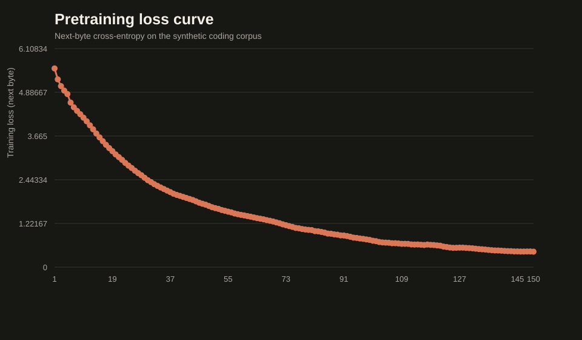
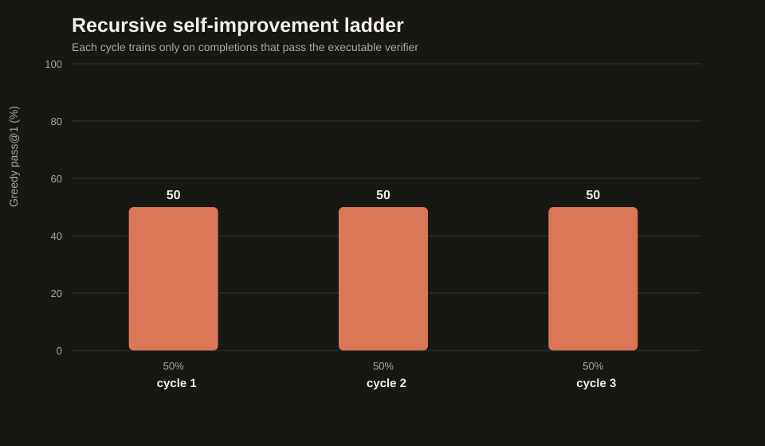

course
A GLM-Style Model,
Built From Scratch
Hybrid attention, mixture of experts, multi-stream residuals — then recursive self-improvement: a 25.7M-parameter model that trains on its own verified programs.
What we scale down
| Component | GLM-5.3-Flash | This project |
|---|
| Total parameters | 320B | 25,730,592 |
| Active / token | 18B | 9,805,344 |
| Layers | 45 | 12 |
| Attention | 34 linear + 11 sparse | 9 linear + 3 sparse |
| Experts | 288, top-8 | 8, top-2 |
| Tokenizer | BPE 154,880 | raw bytes, 260 |
The architecture in one picture
bytes → embedding → four residual streams
↓
[linear attention + MoE] × 3
↓
[sparse attention + MoE] × 1
↓
repeat × 3
↓
RMSNorm → tied LM head
Every fourth layer switches from O(length) linear attention to gathered sparse attention.
Hybrid attention
- Linear layers: ELU+1 positive features, prefix-sum state — O(length), no softmax.
- Sparse layers: recent local window + strided anchor tokens, true softmax over only those.
- Rotary embeddings in both; float32 softmax and norms for stability.
Mixture of experts
- Router picks
top-2 of 8 experts per token; weights = softmax over the top logits.
- One shared expert is always on — capacity every token can rely on.
- Readable loop dispatcher:
torch.where + index_add_, plus per-expert usage stats.
- Training adds a small router balance loss.
Residual streams
- Each block sees a learned softmax mix of the 4 streams.
- Its output is routed back to every stream with learned weights.
- A simplified stand-in for manifold-constrained hyper-connections.
Bytes, not BPE
One token per UTF-8 byte: no learned vocabulary, exact round-trip, tiny tied embedding — the model predicts the next byte of Python.
"def increment(x):" → 17 byte tokens (BPE would use 4)
The verifier is the reward
- Fail-closed AST gate: one function, no imports, no loops, no attributes, allowlisted calls only.
- Hidden unit tests execute in a restricted namespace.
- Statuses:
passed / failed / invalid — never raises, never trusts.
Stage 1 — pretraining
# synthetic Python corpus, generated on the fly
run_cpu.bat scripts\train_pretrain.py --output runs\pretrain-001 ^
--steps 150 --checkpoints 50,100,150 --batch-size 16 --seed 42

Stage 2 — RLOO post-training
- Sample a group of completions per task; reward = executable tests.
- Advantage = reward minus the mean of the other members (leave-one-out).
- Whole group scored in one padded forward pass; zero-spread groups skip the update.
Stage 3 — recursive self-improvement
for cycle in 1..N:
propose sample K completions per task from the current policy
verify keep only completions that pass every hidden test
distill add to the cumulative verified memory (deduplicated)
retrain fine-tune on the model's own verified programs
evaluate greedy pass@1 on frozen tasks
escalate master the rung? unlock the next, harder family
The feedback loop is closed by the executable verifier — the model can only learn from programs that actually run.
The improvement ladder

Receipts record verified-pair counts and pass rates per cycle.
Bonus — a GLM-faithful vision path
- RGB patch embedding → 2 bidirectional ViT blocks → 2×2 learned merger → gated projector.
- 16 visual tokens replace placeholders inside the byte sequence; answer-only loss.
- Compared against a direct-patch baseline on generated seven-segment digits.
Research experiments
- Data diversity: 8 vs 32 vs 88 unique structures at fixed compute, paired seeds.
- Ordering: identical examples, blocked vs interleaved vs 8→88 curriculum.
- RL screen: one design choice at a time, exact McNemar + Holm correction.
- Vision pilot: full 12-layer model + vision tower, bounded trainable surface.
Everything is auditable
- Versioned JSON receipts with SHA-256 weight hashes for every run.
- Deterministic seeds from pure integer hashes — rerun and get the same data.
- Fail-closed everywhere: no overwrites, no silent NaNs, no unknown splits.
run_cpu.bat scripts\train_self_improve.py --initial-checkpoint ... ^ --output runs\self-improve-001
Limitations, stated plainly
- 25M parameters, 192-byte context, synthetic benchmark.
- Screen wins can reverse on fresh seeds and untouched tasks.
- This is a teaching artifact — it establishes method, not broad ability.
Build it, measure it, report it — including the negative results.